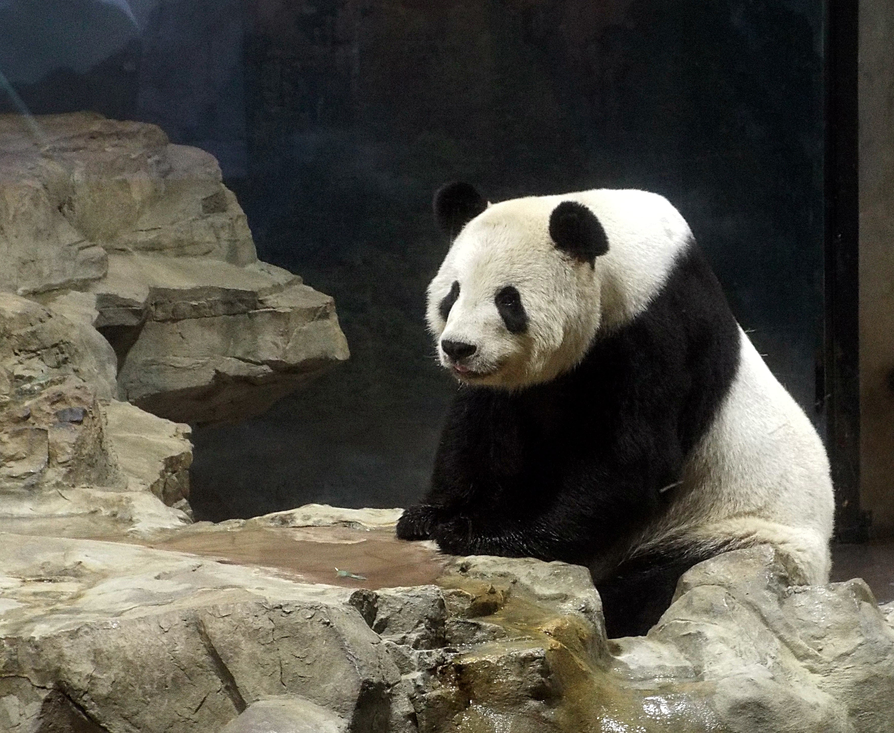
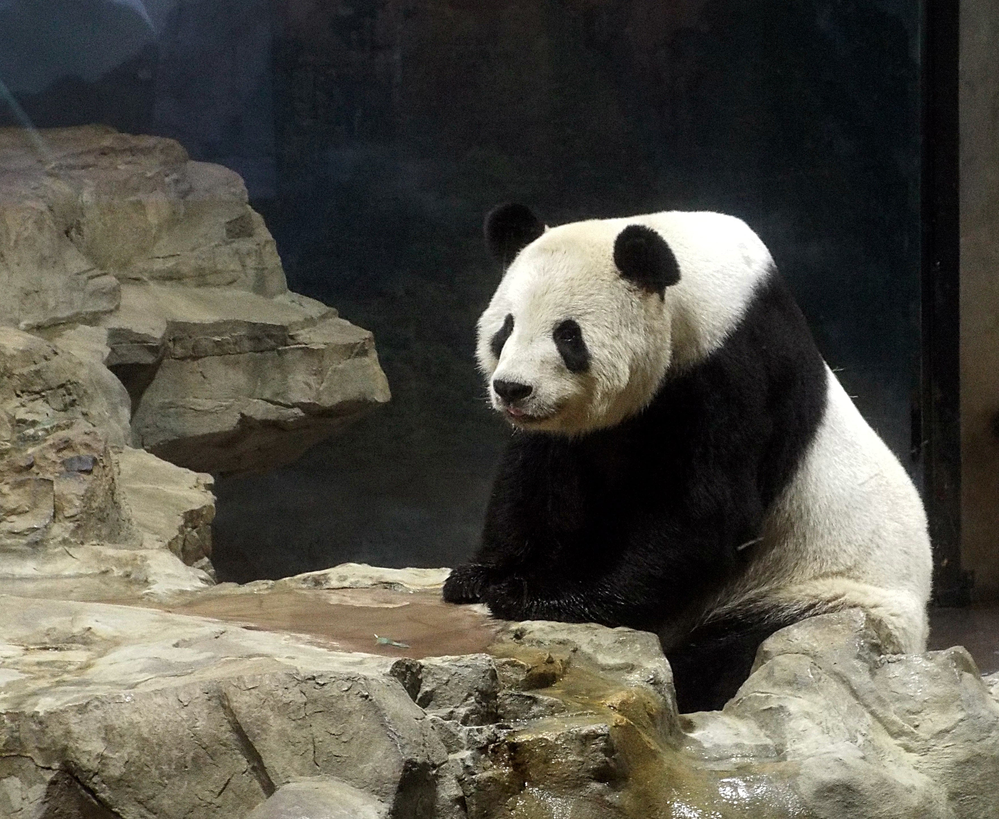

대왕판다
귀여워....
너무 귀여워요 판다ㅠㅠㅠㅠㅠㅠㅠㅠㅠㅠㅠㅠㅠ판다처럼 게으르게 살고싶어요... 다만 상록이가 제일 좋아하는 동물은 대왕판다는 아니다. 꿀벌을 제일 좋아한다. 입는 옷도 다 꿀벌 같다.
귀여운 판다 동영상을 보고 싶으시면, 아래 사진을 눌러 주세요!
너무 귀여워요 판다ㅠㅠㅠㅠㅠㅠㅠㅠㅠㅠㅠㅠㅠ판다처럼 게으르게 살고싶어요... 다만 상록이가 제일 좋아하는 동물은 대왕판다는 아니다. 꿀벌을 제일 좋아한다. 입는 옷도 다 꿀벌 같다.
귀여운 판다 동영상을 보고 싶으시면, 아래 사진을 눌러 주세요!
이 제작물은 아모레퍼시픽의 아리따글꼴을 사용하여 디자인 되었습니다.